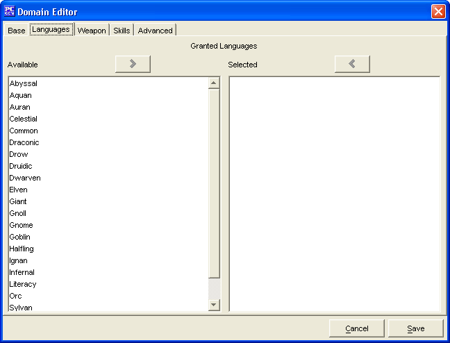

The Languages Tab is used to add granted languages to a priest who selects the domain being created.
The two Granted Languages windows, Available and Selected are used to create a list of languages which the domain grants.
The Cancel and Save buttons, which appear on every tab, are used to either cancel the domain creation or save it to the customDomains.lst file.